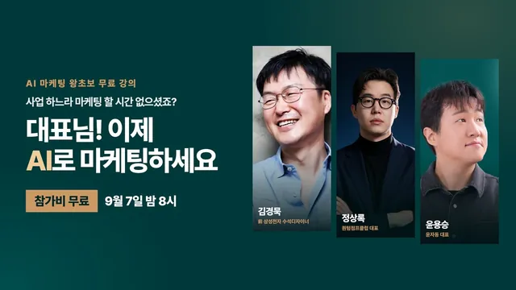

AI 마케팅 왕초보 무료 강의 | 윤자동 라이브

원본 영상 보기 →
- 세팅(하네스)이 결과를 만들어요
- AI가 추론하면 사람도 추론해야 합니다
- 숫자가 아니라 컨셉을 관리하세요
한 줄 요약
윤자동 라이브 특별편이에요. 정상록 대표가 Claude 앱과 Claude Code로 인스타그램 카드뉴스와 마케팅을 자동화하는 실전 세팅을 왕초보용으로 시연하고, 김경욱 교수가 AI 시대에 필요한 '추론'과 '컨셉'이라는 본질을 짚는 3시간짜리 대담입니다.
전체 내용 정리
로컬 LLM을 돌리려면 어떤 하드웨어가 필요할까요
오프닝 Q&A에서 로컬 LLM용 맥 사양 질문이 나왔어요.
발표자들은 예산이 허락하면 M5 울트라 256GB(약 1,800만 원)를 권합니다. AI 에이전트와 로컬에서 Claude Code·Codex를 함께 돌리면 램을 많이 먹거든요.
정상록 대표는 앞에 둔 M5 맥스 128GB로도 로컬 LLM은 간당간당하다고 했어요. 가장 최근 나온 Qwen 3.8 Flash Next는 그것 하나만 돌려도 약 98~100GB를 먹어서 128GB가 금세 꽉 찹니다.
속도는 초당 30토큰 수준이라, Claude나 GPT를 쓰다 로컬로 오면 답답해요. 대신 무료라서 퇴근할 때 걸어 두고 밤새 돌리기 좋고, 기획이 아니라 정해진 업무나 워크플로우 자동화에는 쓸 만합니다.
김경욱 교수: AI는 '추론' 단계에 있어요
게스트로 온라인 연결된 김경욱 교수(전 삼성전자 수석 디자이너)는 AI의 진화를 대화 생성 · 추론 · 에이전트 · 이노베이터 · 오거니제이션 5단계로 설명합니다. 현재는 3단계인 에이전트에 와 있고요.
GPT 3.5는 대화 생성 모델이었습니다. GPT 4.0이 벤치에 묶인 풍선 사진을 보여주며 "줄을 자르면 풍선이 날아간다"는 물리 법칙을 이해한 것이 추론 단계의 시작이었어요.
이후 우리는 멀티모달이 상상해서 말하는 것을 두고 할루시네이션이라 단정했는데, 교수는 이게 사람이 AI를 여전히 대화 생성 수준으로 쓰기 때문이라고 봅니다. 3년이 지난 지금 Fable급 고도화된 추론 모델이 나오면서 더 이상 할루시네이션이라는 말을 하지 않게 됐고요.
핵심 메시지는 이겁니다. AI가 추론을 보내면 사람도 추론으로 답해야 레벨업이 되며 대화가 이어집니다. 사람이 GPT 3.5 수준으로 대화하면 AI의 지능을 극대화할 수 없고 명령을 실행하는 기계로만 쓰게 돼요.
사람은 고등학교 졸업 전에 추론(연역·귀납·귀추)을 다 배웠지만 시험 문제 풀이로만 써서 일상에서 쓰지 못합니다. AI와 추론의 대화를 하려면 연역적·귀납적·귀추적 대화를 할 줄 알아야 해요.
Claude 앱과 Claude Code, 뭐가 다를까요
정상록 대표가 왕초보용으로 두 도구를 구분합니다.
Claude 앱은 인터넷에서 'Claude 데스크톱'을 검색해 다운로드하는 앱으로, 웹에서 접속하는 Claude AI와는 달라요. 앱 안에 채팅 탭과 '코드' 탭이 있고, 코드 탭에서 Claude Design을 씁니다.
또 하나는 터미널(CLI) 환경에서 쓰는 방식이에요. 화면이 낯설 뿐 "안녕"이라고 메시지를 주고받는 건 똑같습니다.
앱은 보기 좋고, 터미널은 보기 어렵지만 AI가 컴퓨터를 직접 다루게 만들 수 있고 취향대로 여러 개를 병렬로 띄울 수 있어서 익숙해진 사람은 대부분 터미널을 선호해요. 가장 큰 난관은 설치이며, 권한 설정 등을 넘어가면 그다음은 똑같은 채팅입니다.
카드뉴스 자동화와 마케팅 퍼널
정상록 대표는 결과부터 보여 줍니다.
"클로드 디자인을 설명해 주는 캐러셀 뉴스를 만들어 줘"라는 한 줄로 여덟 장의 이미지가 브랜드 로고 무드(핑크 + 어두운 남색)에 맞춰 초안으로 나왔어요. 여기에 "이미지·영상이 들어갈 자리를 넣고, 첫 이미지에는 쿠킹하는 장면을 반영해 달라"는 식으로 프롬프트를 더해 다듬습니다.
그다음이 핵심이에요. 이렇게 만든 콘텐츠는 AI가 업로드까지 하고, 댓글에 "에이전트를 남겨 주세요" 같은 키워드를 달아 둔 뒤 사람들이 댓글을 달면 ManyChat 같은 마케팅 도구를 AI가 조작해 "DM 확인 부탁드려요"를 자동 발송합니다.
결국 콘텐츠 생성·발행·고객 유입까지 이어지는 퍼널을 AI가 혼자 운영하는 거예요. 사람이 하는 일은 두 가지뿐입니다. 처음에 AI 마케터를 잘 만들어 두는 것, 그리고 콘텐츠를 검수하는 것.
왜 같은 프롬프트가 사람마다 다른 결과를 낼까요
"클로드 디자인 캐러셀 만들어 줘"라고 똑같이 쳐도 남들은 그렇게 안 나옵니다.
이유는 이래요. Claude Code는 내 컴퓨터의 실제 폴더와 파일을 기반으로 작업하는데, 사람마다 폴더 구성이 다르거든요.
따라서 AI가 원하는 결과물을 내게 하는 구조 — 폴더·파일·규칙, 즉 세팅을 잘하는 게 핵심입니다. 요즘 말하는 하네스(harness)가 이거예요. 브랜드 자산을 찾을 수 있게 데이터를 만들어 놓고, 그것을 찾으라는 규칙을 만드는 식이죠.
정상록 대표는 기본 세팅은 하루면 하지만 하네스는 지금도 계속 구축 중이라고 했습니다. 시행착오를 많이 겪었지만 잘 알려 주면 금방 한대요.
Refero.design — 레퍼런스를 그대로 넘기기
새 사이트나 페이지를 만들 때 레퍼런스를 찾는 게 중요한데, Refero라는 사이트를 소개합니다.
"AI SaaS" 같은 키워드로 검색하면 Grok, 구글 제미나이, 애플 뮤직, Claude 등 거대 기업의 웹·앱 페이지 예시가 나오고, 마음에 드는 페이지를 다운로드하거나 클릭 시 넘어가는 플로우(퍼널)까지 볼 수 있어요. 이미지 다운로드는 무료이고 MCP 연동은 유료(월 10달러 수준)입니다.
다운로드한 레퍼런스를 Claude Code나 Codex에 넘기면서 "우리 홈페이지 디자인 무드대로 만들어 줘"라고 하면 페이지가 만들어져요.
여기에 design.md라는 문서가 있습니다. 사이트의 색·폰트·Tailwind CSS·디자인 토큰 등 디자인 구성 요소를 AI가 읽을 수 있게 정리한 파일이에요. 구분하면 이렇습니다. 사람이 보는 용도는 무드보드, AI가 보는 용도는 design.md.
AI가 만든 카피는 슬롭이에요
편집 도구 화면에서 카피를 바꾸는 것이 사람에게 가장 필요한 작업입니다. AI가 뽑은 카피는 슬롭이라 사람이 다 바꿔야 해요.
예를 들어 "클로드 디자인 꿀팁 다섯 가지"라는 후킹 카피는, 들어오자마자 다섯 가지가 뭔지 궁금해서 바로 다음 장으로 넘기게 만듭니다. AI가 갖다 붙인 밋밋한 카피와는 완전히 달라요.
사람이 중간에 개입해 기획과 마케팅 요소를 넣으면 결과물이 훨씬 좋아집니다. 이렇게 다루다 보면 AI도 사용자가 어떤 무드를 좋아하는지 학습하고(하네스의 메모리 기능), 특정 결과에 "이건 좋아"라고 반응하면 그 취향이 쌓여요.
GPT-6 Astra와 컴퓨터 활용
정상록 대표는 GPT-6 Astra가 엑셀에 직접 들어가 클릭하고, 홈페이지에 문제가 있는지 보라고 하면 페이지를 순식간에 넘기며 다 확인한다고 합니다. 심지어 "악보 하나 쳐 줘"라고 하면 마우스로 피아노 건반을 박자에 맞춰 클릭해요.
OpenAI는 이 모델을 내놓으며 사무직 대체를 언급했고, AI 모델 중 수능 만점을 처음 받았다고 알려졌습니다. 엑셀 대회에서는 사람이 간신히 이겼고요.
AGI를 이야기할 수 있는 첫 번째 모델이라는 평가가 나왔고, 두 발표자는 이번엔 어그로가 아니라 실제로 그 정도라는 데 동의합니다. AI를 잘 다루는 건 이제 엑셀이나 키보드 타이핑처럼 기본 소양이 될 거예요.
영상 편집도 Claude Code로
정상록 대표의 유튜브 영상은 대부분 Hermes 에이전트로 편집됩니다.
54분짜리 라이브 영상에 노래방처럼 말을 따라가는 자막이 붙고, 화자 이름이 왼쪽에 나오며, AI가 장면마다 캡처해 얼굴을 가리지 않는 좌표를 찾아 자막을 배치해요(하이퍼프레임스 사용).
문장을 해석해 어울리는 BGM을 검색·다운로드하고, 사람이 말할 때는 BGM을 줄이고 안 할 때는 키우며 몇 데시벨이어야 말을 방해하지 않는지까지 맞춥니다.
놀라운 건 이거예요. 제목·설명·타임라인·게스트 프로필 링크까지 처리하는데, 게스트가 "스레드 DM으로 링크 보내드릴게요"라고 라이브에서 말한 것을 AI가 읽고 실제로 브라우저를 열어 스레드 DM을 뒤져 링크를 찾아 넣었습니다. 라이브가 끝나고 자는 사이 두 시간쯤 걸려 편집과 업로드까지 끝나 있었고요.
이런 작업은 복잡한 추론이 아니라서 로컬 LLM으로도 충분해요. 속도만 느릴 뿐 자는 동안 돌리면 상관없고 무료입니다. 정상록 대표는 로컬 LLM이 앞으로 대중화될 거라 보고, 구독료로 월 1,000만 원을 쓰는 상황이면 비싼 컴퓨터에 1~2천만 원을 투자해 절반 이하로 줄일 수 있다고 했어요.
본질: 컨셉을 관리하나요, 숫자를 관리하나요
김경욱 교수는 자동화의 목적 핵심에 '컨셉'이 있다고 합니다.
로버트 카츠의 개념 역량 모델, 래리 그레이너의 조직 성장 5단계 모델을 인용하며, AI가 대화 생성·추론·에이전트로 발전한 과정이 사람이 조직을 발전시킨 과정과 똑같다고 지적해요.
그레이너의 2단계는 '관리에 의한 성장'인데, 한국 기업들은 대체로 숫자(경영표·판매량·이익·인원)를 관리하지만, 사람들이 존경하는 좋은 기업들은 컨셉을 관리했습니다.
정상록 대표가 나이키 사례를 듭니다. 2020년경 이커머스 전문 CEO가 부임해 매장을 줄이고 전부 온라인으로 돌리며 매장 방문을 비효율로 보고 숫자로 바꿨어요. 그런데 운동 문화와 전문성이라는 나이키의 컨셉을 놓쳐 매출이 떨어지고 호카 같은 러닝 브랜드가 올라왔습니다.
전부 자동화해 버리면 같은 문제가 생길 수 있어서, 휴먼 인 더 루프와 사고·추론 과정, 컨셉에 대한 고민이 필요해요.
AI FOMO와 '그냥 하는 것'
두 발표자는 목적 없이 남들이 하니까 따라 하는 태도를 경계합니다.
신비한 건축 사전, 쇼츠 자동화, 건축 자동화 같은 부업을 남들이 하니 따라 만드는 사람이 많아요. 그런데 코덱스+Astra에 "유튜브 보고 건축 자동화 영상 만들어 봐"라고 하면 AI가 크롬에 들어가 구글 플로우로 알아서 만듭니다. 누구나, 오히려 AI가 더 빠르게 할 수 있으니 본질이 더 중요해지는 거죠.
일론 머스크는 AI 시대에 아이들을 어떻게 교육하냐는 질문에 1분 가까이 침묵한 뒤 "사람에게 어떤 가치를 줄 수 있을지 고민하는 걸 알려줘야 한다"고 답했어요.
정상록 대표의 고백도 솔직합니다. 5~6년 전 워드프레스로 하루 500개씩, 총 5만 개 넘는 블로그 글을 자동 생성해 애드센스 수익을 냈지만, 세상에 쓰레기를 양산하는 느낌에 현타가 와서 그만뒀다고 해요. 사람들의 문제를 해결하는 일에서 행복을 느끼는 사람이라고 합니다.
일하는 방식을 바꾸기: 이메일부터
정상록 대표는 이메일에 직접 답장을 써 본 지 한 달이 넘었어요.
한 줄짜리도 무조건 Claude Code로 쓰는데, 그러면 AI가 일하며 기록이 남고 맥락이 쌓이고 답변 방식이 학습됩니다. 이메일은 몇 줄 쓰려 해도 수정하고 말투 바꾸다 보면 하나에 30분씩 걸리는데, AI에 맡기면 잘 써 줘요.
세금계산서 발행, 카톡 공지, SNS 업로드도 모두 AI로 처리합니다. 그는 직원들에게도 "시간이 오래 걸려도 직접 컴퓨터에서 일하지 말고 AI로 일을 시켜라"고 말해요.
Claude Code라는 이름이 개발자용처럼 들리지만, 실제로는 모든 일을 시작하고 끝내는 OS에 가깝습니다.
핵심 인사이트
- 세팅(하네스)이 결과를 만들어요: Claude Code는 내 폴더와 파일을 기반으로 움직이므로, 같은 한 줄 프롬프트도 브랜드 자산과 규칙이 세팅돼 있느냐에 따라 결과가 완전히 달라집니다. 기본 세팅은 하루, 하네스는 계속 다듬는 거예요.
- AI가 추론하면 사람도 추론해야 합니다: 대화 생성 수준으로 명령만 던지면 AI 지능을 못 끌어내요. 연역·귀납·귀추의 대화를 할 줄 알아야 하고, 세상에 없던 것은 귀추에서 나옵니다.
- 숫자가 아니라 컨셉을 관리하세요: 나이키가 매장을 비효율로 보고 전부 온라인과 숫자로 돌리다 러닝 문화라는 컨셉을 놓쳐 밀렸어요. 전부 자동화하면 같은 함정에 빠지니 휴먼 인 더 루프가 필요합니다.
- AI 카피는 슬롭, 기획은 사람 몫이에요: AI가 뽑은 후킹 문구는 밋밋합니다. "다섯 가지가 뭔지 궁금해서 넘기게" 만드는 마케팅 개입이 결과물의 질을 가릅니다.
- 로컬 LLM의 현실적 용도가 있어요: 초당 30토큰으로 느리지만 무료라, 추론이 필요 없는 정형 업무(자막·전사·DM 스크래핑 등)를 자는 동안 돌리는 데 적합합니다.
오늘 당장 해볼 것
- 카드뉴스나 페이지를 AI로 만들기 전에, 브랜드 색·폰트·로고·톤 레퍼런스를 한 폴더에 모으고 "이 폴더를 기준으로 초안을 만들어라"라고 지시하세요. 세팅 없이 한 줄로 던지지 마시고요.
- 참고할 사이트를 정한 뒤 그 디자인의 색·폰트·레이아웃을 한 문서로 정리해 AI에게 레퍼런스로 넘기세요. 그리고 나온 카피는 전부 "궁금해서 넘기게" 만드는 문구로 사람이 직접 고쳐 쓰시고요.
- 이메일 답장 한 건을 직접 쓰지 말고 "이 메일에 이런 취지로 답장 초안을 써 줘"라고 맡겨 보세요. 걸린 시간과 품질을 직접 쓴 경우와 비교해 보시고, 내 사업의 '컨셉'을 한 문장으로 적어 보는 것도 함께 해보세요.